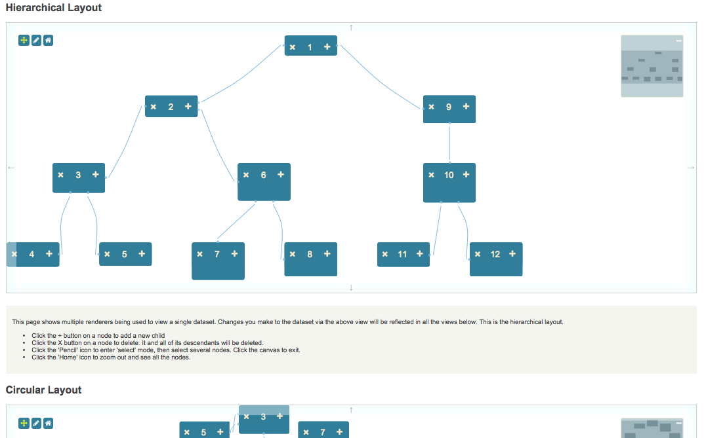

This is an example of how the Toolkit supports multiple renderers for one dataset. It combines the Hierarchical, Circular, Spring and Absolute demonstrations into one page. Operations in one renderer affect the dataset and cause updates in all renderers.

{
"dependencies": {
"font-awesome": "^4.7.0",
"jsplumbtoolkit": "file:../../jsplumbtoolkit.tgz"
}
}
<link href="//maxcdn.bootstrapcdn.com/bootstrap/3.2.0/css/bootstrap.min.css" rel="stylesheet">
<link href="node_modules/font-awesome/css/font-awesome.min.css" rel="stylesheet">
<link rel="stylesheet" href="node_modules/jsplumbtoolkit/dist/css/jsplumbtoolkit-defaults.css">
<link rel="stylesheet" href="node_modules/jsplumbtoolkit/dist/css/jsplumbtoolkit-demo.css">
<link rel="stylesheet" href="app.css">
Font Awesome, Bootstrap, jsplumbtoolkit-demo.css, and app.css are used for this demo and are not jsPlumb Toolkit requirements. jsplumbtoolkit-defaults.css is recommended for
all apps using the Toolkit, at least when you first start to build your app. This stylesheet contains sane defaults for the various widgets in the Toolkit.
<script src="node_modules/jsplumbtoolkit/dist/js/jsplumbtoolkit.js"></script>
<script src="demo-support.js"></script>
<script src="app.js"></script>
We import jsplumbtoolkit.js from node_modules (it was listed in package.json). demo-support.js is used to generate random data sets for the demo. app.js contains the demo code; it is
discussed on this page.
This demonstration uses a single template to render its nodes across all renderers:
<script type="jtk" id="tmplNode">
<div style="width:${w}px;height:${h}px;">
<div class="name">
<div class="delete" title="Click to delete">
<i class="fa fa-times"></i>
</div>
<span>${name}</span>
<div class="add" title="Add child node">
<i class="fa fa-plus"></i>
</div>
</div>
</div>
</script>
Data for the demonstration is created using the randomHierarchy function from the included demo-support.js file.
This function creates an arbitrary hierarchy and assigns different widths/heights to the various nodes.
The data is generated like this:
// make a random hierarchy
var hierarchy = jsPlumbToolkitDemoSupport.randomHierarchy(3, 3);
And loaded via this call at the bottom of app.js:
toolkit.load({data: hierarchy});
This demonstration has a very simple view:
var view = {
nodes: {
"default": {
template: "tmplNode"
}
}
};
The render parameters for this demonstration are broken up into two parts - common parameters, shared by all renderers, and then renderer-specific parameters (which are, in this case, just layout parameters, but could be anything).
var jsPlumbOptions = {
Anchor:"Continuous",
Connector: [ "StateMachine", { curviness: 10 } ],
DragOptions: { cursor: "pointer", zIndex: 2000 },
PaintStyle: { lineWidth: 1, strokeStyle: "#89bcde" },
HoverPaintStyle: { strokeStyle: "#FF6600", lineWidth: 3 },
Endpoints: [
[ "Dot", { radius: 2 } ],
[ "Dot", { radius: 2 } ]
],
EndpointStyle: { fillStyle: "#89bcde" },
EndpointHoverStyle: { fillStyle: "#FF6600" }
};
var commonParameters = {
view: view,
jsPlumb: jsPlumbOptions,
zoomToFit: true,
lassoFilter: ".controls, .controls *, .miniview, .miniview *",
events: {
canvasClick: function () {
toolkit.clearSelection();
}
},
consumeRightClick: false
};
Here's an explanation of what the various common parameters mean:
These are the Node, Port and Edge definitions.
This is something you'll find useful when developing: the default behaviour of the Surface widget is to consume right-clicks.
This selector specifies elements on which a mousedown should not cause the selection lasso to begin. In this demonstration we exclude the buttons in the top left and the miniview.
We listen for the canvasClick event on the Surface: a click somewhere on the widget's whitespace. Then we clear
the Toolkit's current selection.
Recall that the Surface widget is backed by an instance of jsPlumb. This parameter sets the Defaults for that object.
When true, this parameter instructs a Surface widget to zoom the content so that it is all visible, both when the
widget is first constructed (to cover the case that there is data already in the Toolkit) and also whenever new data is loaded via the load method on the Toolkit instance.
There are three things that are different for each renderer:
All of this information is stored (indirectly, in the case of the element IDs) in the rendererSpecs object:
var rendererSpecs = {
"hierarchical":{
type: "Hierarchical",
parameters: {
orientation: "horizontal",
padding: [60, 60]
}
},
"circular":{
type: "Circular",
parameters: {
padding: 30
}
},
"spring":{
type:"Spring"
},
"absolute":{
type:"Absolute"
}
};
These are processed in the following way:
var render = function(id, layoutParams) {
var selector = "#demo-" + id;
var r = toolkit.render({
container: "demo-" + id,
layout: layoutParams,
miniview: {
container: "miniview-" + id
},
events:{
"modeChanged" :function (mode) {
jsPlumb.removeClass(jsPlumb.getSelector(selector + " [mode]"), "selected-mode");
jsPlumb.addClass(jsPlumb.getSelector(selector + " [mode='" + mode + "']"), "selected-mode");
}
}
}, commonParameters);
// bind event listeners to the mode buttons
jsPlumb.on(selector, "click", "[mode]", function () {
r.setMode(this.getAttribute("mode"));
});
// on home button click, zoom content to fit.
jsPlumb.on(selector, "click", "[reset]", function () {
toolkit.clearSelection();
r.zoomToFit();
});
};
// render each one
for (var id in rendererSpecs)
render(id, rendererSpecs[id]);
To explain each parameter:
modeChanged event to some code that maintains the state of the buttons that appear in the top left corner of the canvas."modeChanged" :function (mode) {
jsPlumb.removeClass(jsPlumb.getSelector(selector + " [mode]"), "selected-mode");
jsPlumb.addClass(jsPlumb.getSelector(selector + " [mode='" + mode + "']"), "selected-mode");
}
Using jsPlumb to add/remove classes or get an appropriate selector is not necessary if you have some other library (such as jQuery) in your page. The Toolkit uses these methods because it does not need jQuery. Any library that returns a list-like object for a selector is appropriate to use here.
render method takes an optional second argument, for use cases such as this, in which you want to share some parameters between several render calls.The renderer is assign to the variable r. We then bind two click listeners to it:
jsPlumb.on(selector, "click", "[mode]", function () {
r.setMode(this.getAttribute("mode"));
});
// on home button click, zoom content to fit.
jsPlumb.on(selector, "click", "[reset]", function () {
toolkit.clearSelection();
r.zoomToFit();
});
The first of these extracts the desired mode from the button that was clicked and sets it on the renderer; this causes the modeChanged event to be fired, which is picked up by the code we discussed above.
The second click listener here is used to clear the current selection and reset the renderer to the state in which all of the content is visible.
Lasso selection is enabled by default on the Surface widget. To activate the lasso, click the pencil icon in the toolbar:

The code that listens to clicks on this icon discussed above in the section about rendering.
The lasso works in two ways: when you drag from left to right, any node that intersects your lasso will be selected. When you drag from right to left, only nodes that are enclosed by your lasso will be selected.
The Surface widget automatically exits select mode once the user has selected something. In this application we also listen to clicks on the whitespace in the widget and switch back to pan mode when we detect one. This is the events argument to the render call:
events: {
canvasClick: function (e) {
toolkit.clearSelection();
}
}
clearSelection clears the current selection and switches back to Pan mode.
Each node in this demonstration has two buttons:

Clicking on the + button causes a new node to be added as a child of the current Node. Here's the code that sets
up the listener and adds the child. Note the use of the batch function to suspend repainting until all
the model operations are completed - this is required by the Spring layout; without it, the layout would repaint before the edge existed and the new node would not necessarily be positioned near the node that was clicked on:
jsPlumb.on(document, "click", ".add *", function (e) {
// this helper method can retrieve the associated
// toolkit information from any DOM element.
var info = toolkit.getObjectInfo(this);
// get a random node.
var n = jsPlumbToolkitDemoSupport.randomNode();
// wrap the node and edge addition in a batch, because the spring layout prefers that all
// data operations be completed before a refresh of the layout.
toolkit.batch(function() {
// add the node to the toolkit
var newNode = toolkit.addNode(n);
// and add an edge for it from the current node.
toolkit.addEdge({source: info.obj, target: newNode});
});
});
Clicking the delete button in this demonstration deletes not just the current node, but also all of its descendants. This is done by creating a Selection and then instructing the Toolkit to remove everything in that Selection:
jsPlumb.on(document, "click", ".remove *", function (e) {
var info = toolkit.getObjectInfo(this);
var selection = toolkit.selectDescendants(info.obj, true);
toolkit.remove(selection);
});